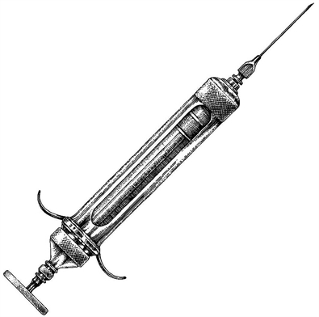

DOULEUR
"Le corps humain a une faculté extraordinaire d'adaptation; j'ai découvert qu'on pouvait supporter l'insupportable si l'on gardait le moral, même quand le corps souffrait." Nelson MANDELA
Selon la définition officielle de l’Association internationale pour l’étude de la douleur (IASP), "la douleur est une expérience sensorielle et émotionnelle désagréable, associée à une lésion tissulaire réelle ou potentielle, ou décrite dans ces termes".
Chaque être humain ressent la douleur d’une manière qui lui est propre, de telle sorte qu’une même cause, selon la personnalité et l'expérience de celle-ci, peut produire des effets de forme et d’intensité différentes. C’est tout le vécu émotionnel et corporel qui transparaît dans la douleur. Une grande partie de la douleur ressentie est composée d'émotions (souvenirs d'anciennes douleurs et anticipation de futurs douleurs). La douleur ne serait en fait réelle qu'à 20-30 % de l'intensité totale perçue.
Migraines et céphalées, fibromyalgie, douleurs neuropathiques, rachialgie, zona, acouphène, algie de la face, arthrose, troubles digestifs, membre fantôme, etc. ; l’utilisation de l’hypnose est validée par de nombreuses études qui montrent que les suggestions peuvent modifier et réduire la perception de la douleur. Cette approche analgésique ne soigne en aucun cas la cause de la douleur lors d'un dysfonctionnement nerveux, tissulaire ou biologique avéré mais en réduit la sensation.
L'hypnose reste une médiation plus qu'efficace pour toutes les sensations dites psychosomatiques ou les douleurs ressenties avec ou en l'absence de cause et de laision. Les techniques utilisant l’hypnose sont des jeux mentaux et des exercices d’imagination. L'action hypnotique repose sur les dires du patient qui évoque volontiers, par des métaphores, les symptômes dont il souffre. Le praticien utilise ces analogies pour les modifier voire en proposer d’autres plus adaptées au soulagement.
La douleur est souvent décrite comme une transe négative au long cours. Une partie du monde intérieur du sujet est dissociée par rapport au reste. On pourrait dire de la même manière qu’une partie du monde intérieur est hyper-associée à la pensée consciente, l’attention.
Chaque être humain ressent la douleur d’une manière qui lui est propre, de telle sorte qu’une même cause, selon la personnalité et l'expérience de celle-ci, peut produire des effets de forme et d’intensité différentes. C’est tout le vécu émotionnel et corporel qui transparaît dans la douleur. Une grande partie de la douleur ressentie est composée d'émotions (souvenirs d'anciennes douleurs et anticipation de futurs douleurs). La douleur ne serait en fait réelle qu'à 20-30 % de l'intensité totale perçue.
Migraines et céphalées, fibromyalgie, douleurs neuropathiques, rachialgie, zona, acouphène, algie de la face, arthrose, troubles digestifs, membre fantôme, etc. ; l’utilisation de l’hypnose est validée par de nombreuses études qui montrent que les suggestions peuvent modifier et réduire la perception de la douleur. Cette approche analgésique ne soigne en aucun cas la cause de la douleur lors d'un dysfonctionnement nerveux, tissulaire ou biologique avéré mais en réduit la sensation.
L'hypnose reste une médiation plus qu'efficace pour toutes les sensations dites psychosomatiques ou les douleurs ressenties avec ou en l'absence de cause et de laision. Les techniques utilisant l’hypnose sont des jeux mentaux et des exercices d’imagination. L'action hypnotique repose sur les dires du patient qui évoque volontiers, par des métaphores, les symptômes dont il souffre. Le praticien utilise ces analogies pour les modifier voire en proposer d’autres plus adaptées au soulagement.
La douleur est souvent décrite comme une transe négative au long cours. Une partie du monde intérieur du sujet est dissociée par rapport au reste. On pourrait dire de la même manière qu’une partie du monde intérieur est hyper-associée à la pensée consciente, l’attention.

En effet, le souffrant passe une grande partie de son temps à penser à cette sensation, à cette émotion. Remarquons que quelle que soit la manière d’en parler, le phénomène est chronique, c’est-à-dire fixe, stable, immobile.
Lors d’une séance visant la réification algique, nous observons successivement :
- l’association hypnotisé - hypnotisant, la création du lien thérapeutique
- la dissociation sujet - monde extérieur
- l’association de l’attention consciente avec la zone douloureuse
- la dissociation de la douleur du reste de l’expérience psychique
- l’association de la douleur avec un objet, une chose en établissant un lien analogique entre les deux
- la modification ou le déplacement de l’objet qui, par analogie, modifie ou déplace la douleur
- la réassociation de cette partie du corps avec le reste du vécu corporel et de l’ensemble de la pensée consciente
- la réassociation du sujet avec le monde extérieur
- et en même temps, la dissociation du lien avec l'hypnotisant
Il reste cependant nécessaire de consulter un spécialiste de santé si l'origine de la douleur n'est pas connue et controlée.
Lors d’une séance visant la réification algique, nous observons successivement :
- l’association hypnotisé - hypnotisant, la création du lien thérapeutique
- la dissociation sujet - monde extérieur
- l’association de l’attention consciente avec la zone douloureuse
- la dissociation de la douleur du reste de l’expérience psychique
- l’association de la douleur avec un objet, une chose en établissant un lien analogique entre les deux
- la modification ou le déplacement de l’objet qui, par analogie, modifie ou déplace la douleur
- la réassociation de cette partie du corps avec le reste du vécu corporel et de l’ensemble de la pensée consciente
- la réassociation du sujet avec le monde extérieur
- et en même temps, la dissociation du lien avec l'hypnotisant
Il reste cependant nécessaire de consulter un spécialiste de santé si l'origine de la douleur n'est pas connue et controlée.
EN RELATION


DISSOCIATION
PSYCHOSOMA
EMOTION
SYMPTÔME
CORPS